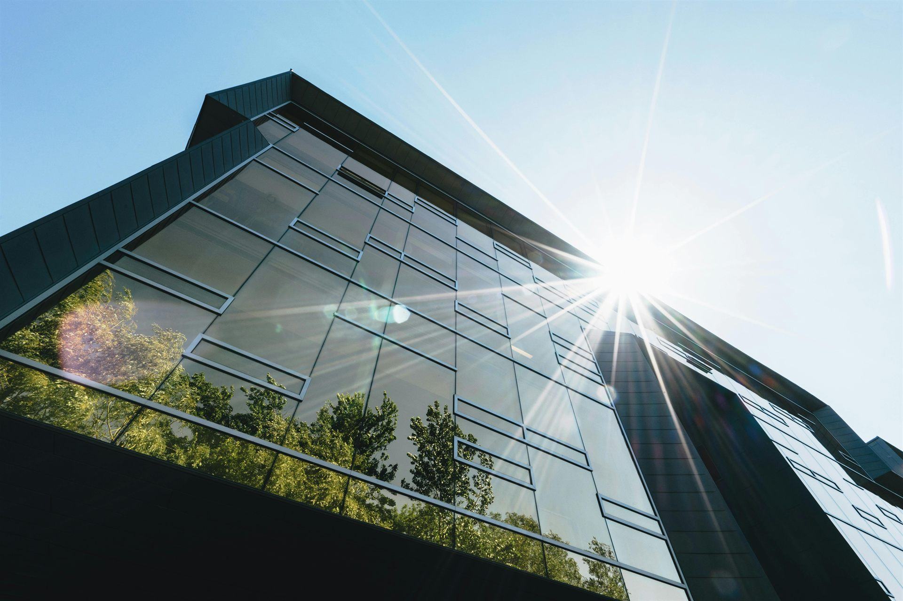

Van vergunning tot oplevering — één partnerschap dat uw project ontlast, versnelt en de kwaliteit borgt.
Nederland moet zijn energienet verdubbelen om de transitie bij te benen. Netcongestie, personeelstekort en groeiende regeldruk remmen de uitvoering. Aannemers en netbeheerders lopen vast in de voorbereiding en dreigen deadlines te missen.
Dat is precies de opening voor een sterk partnerschap dat ontlast, versnelt en kwaliteit borgt — van vergunning tot oplevering.
Twee specialisten die elkaar perfect aanvullen.

Full-service partner voor milieu- en omgevingsvraagstukken. Embridge slaat de brug tussen onderneming en omgeving — van vergunning tot MER, van ecologie tot bodem.
Specialist in projectmanagement, engineering en capaciteitsinzet voor de ondergrondse infra. Perfact verbindt mens, kennis en techniek om verduurzamingsprojecten te versnellen.
Waar Embridge de omgeving ontgrendelt, brengt Perfact de uitvoering tot leven. Samen bieden wij aannemers en netbeheerders een end-to-end ontzorgingspakket — van de eerste vergunningsscan tot het opgeleverde werkpakket.
Concrete voordelen, afgestemd op uw rol in de keten.
De energietransitie vraagt om snelheid én zorgvuldigheid. Wij leveren beide. Embridge ontgrendelt de omgeving, Perfact ontwerpt de executie. Samen brengen wij uw project van vergunning naar oplevering — zonder verrassingen.
Benieuwd hoe wij úw project kunnen versnellen? Neem gerust contact met ons op.